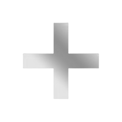
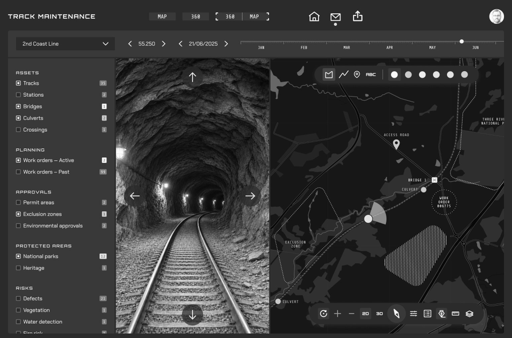
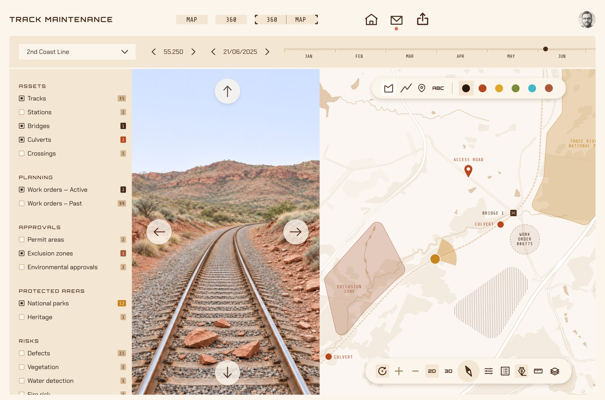
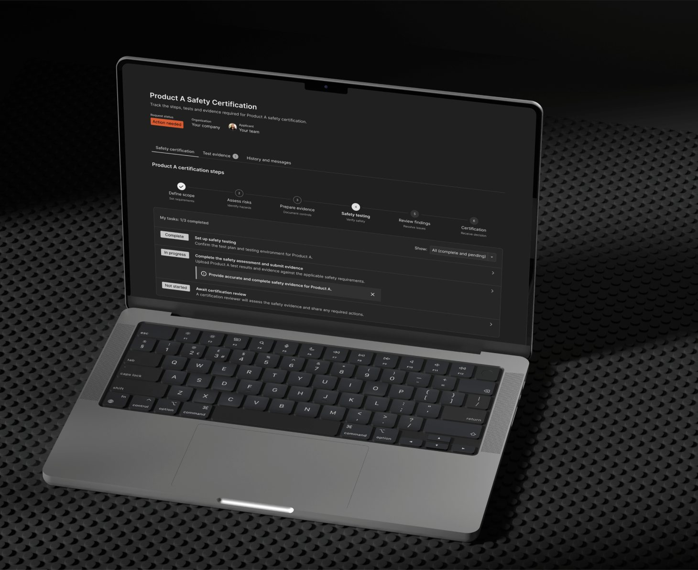
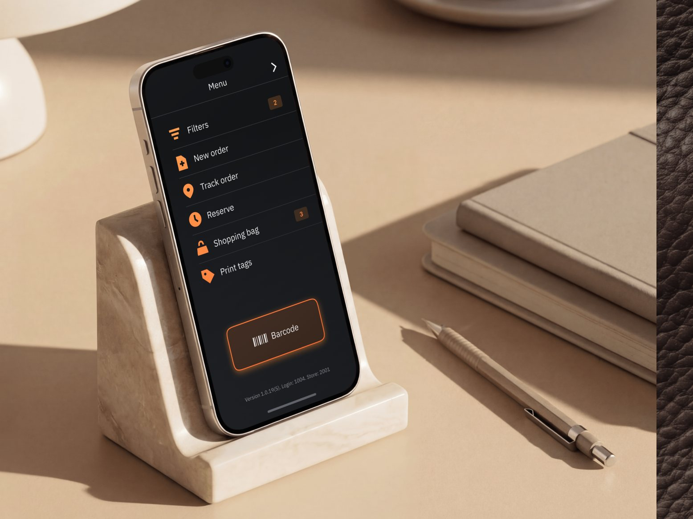
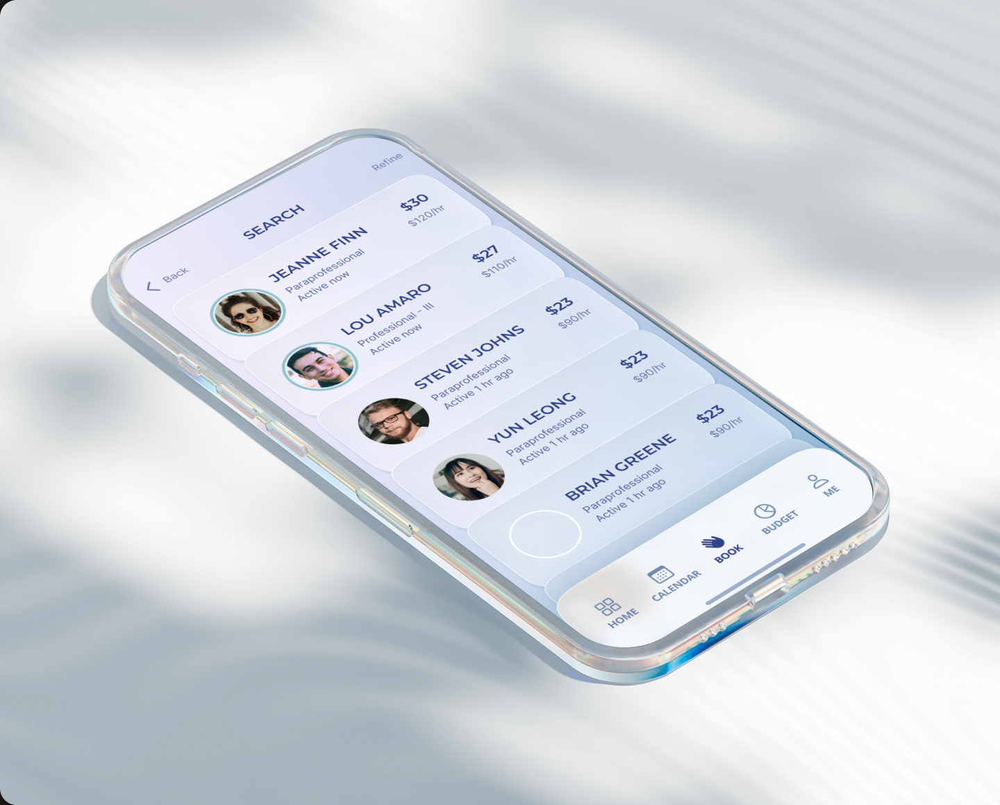
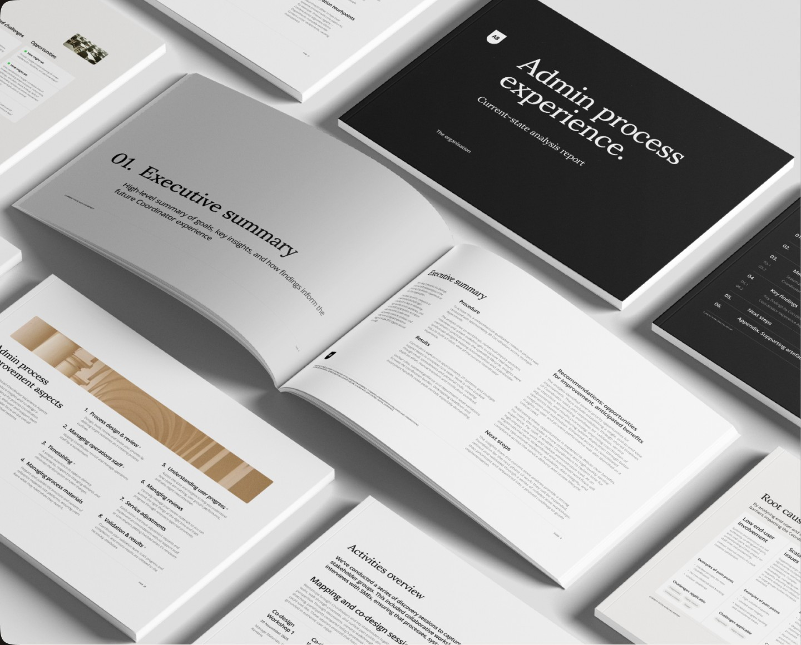
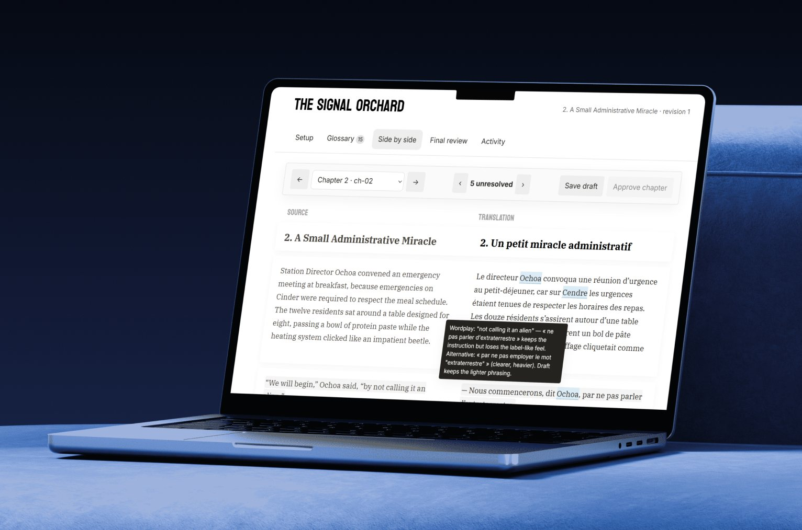
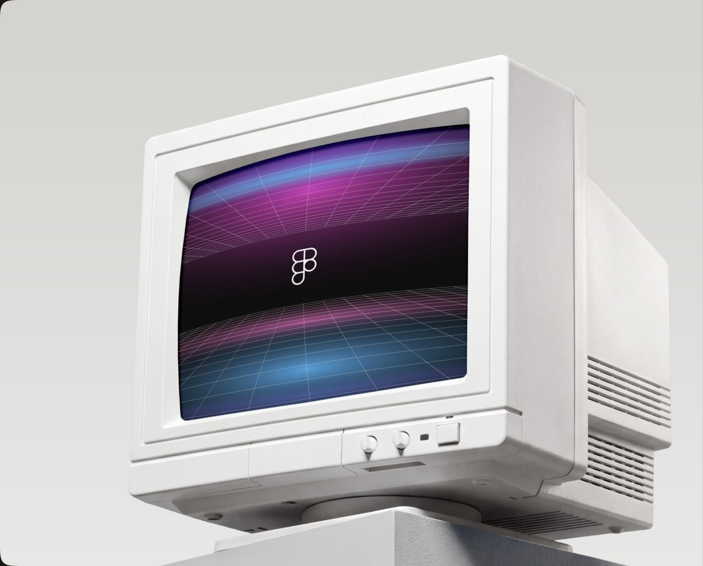
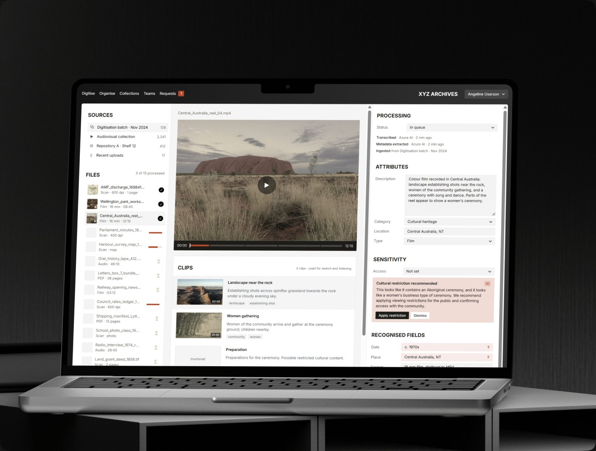

AI Automation for product designers
Codex Community event talk, June 2026
I’m a communicator, explorer, builder and engineers’ friend with 14 years in design, a Master’s in Computer Science, and experience in project management and teaching. How I work: talk to people. Find the real problem. Map the workflow, simplify it. Prototype it so stakeholders see it, understand it, and say yes.

Immersive Spatial Collaboration Tool for railway asset management. I’ve led complex prototyping and design system development; collaborated on user research and delivery support. Result: efficient planning, less time/cost spent on field visits.



Audit and redesign of a complex certification/approval flow with multiple organisations and departments involved, following a recent ServiceNow implementation.
Result: average approval time reduced from 12 months to 3 months.

Luxury fashion retailer with department stores and multi-brand boutiques, where sales rely on personal connections between customers and style assistants. A family of iOS apps for style assistants, warehouse and delivery teams: style suggestions, stock access, indoor navigation and checkout on iOS.
Result: +10% items sold per sales assistant year on year, 550 devices making 8,000 barcode scans a day, and the country’s first mobile checkout on iOS.

E2E Product Design – user research, focus groups, questionnaires, personas, journey mapping, data analysis, stakeholder pitches, lo-fi, hi-fi, UI and handover. iOS PoC app delivered.

Current-state assessment. Comprehensive experience assessment and process mapping of an internal admin role at a major education client: around 20 systems and many siloed departments, mapped end to end from the admin’s point of view for the first time.

Agent skill. Manages terminology, character names, translation rules and style controls. Makes it possible to translate a fiction novel with consistent personal style choices in about 10 hours.

Learning sessions content and delivery, go-to prototyping support for the APAC team: 68 training sessions on advanced prototyping and automation, plus hands-on 1:1 help.

Government client. UX Lead: AI-driven transcription, metadata automation and document management workflow PoC prototyped and implemented.

UX Lead. GIS visualisations, digital twin and AI-assisted planning platform for the processing industry. Interactive prototypes for sales pitches, PoC web app delivered.
Daria led the building and evolving of our Design, Figma and AI prototyping capability across a large national team of designers. […] What makes Daria particularly good is her ability to bridge design and technology. She can get deep into a technical problem, understand what engineers and technology teams need, and then translate that into a strong experience for users.
Daria has a talent for bringing clarity to ambiguity, turning complex technical discussions, vague ideas and high-level stakeholder commentary into clear direction and execution. […] She builds trust and alignment with ease across senior stakeholders, technical teams, and offshore team members.
She combines exceptional project management, business analysis, and stakeholder communication skills with deep UI/UX expertise, enabling her to deliver outstanding outcomes while keeping users at the centre of every decision.
Thank you for being the most amazing counsellor and manager over the last 4 years, a lot of my career has been shaped by your guidance and support, and I was always so impressed by the breadth of your knowledge.
You have single-handedly raised everyone’s skillsets in continually showcasing the latest and greatest in Figma and vibe-coding. You have always been a go-to source of knowledge and someone who is always ready to provide the best advice on design and UX challenges.
Thank you for empowering me to advocate for design decisions that make our products better.
Your input and experience have been invaluable in getting to the position we are now in and without you we really wouldn’t have made the impact we did. No task was too challenging for you.
I still remember when you invited me to join the AI + Design workshop and share how AI could help us prototype and bring design and development closer together. You gave me so much guidance and encouragement throughout that session.
Codex Community event talk, June 2026
With hard styling rules
Research project, user testing
Physical Arduino prototype
Local search service, 2.6M monthly visitors
Software vendor portal, 450 pages